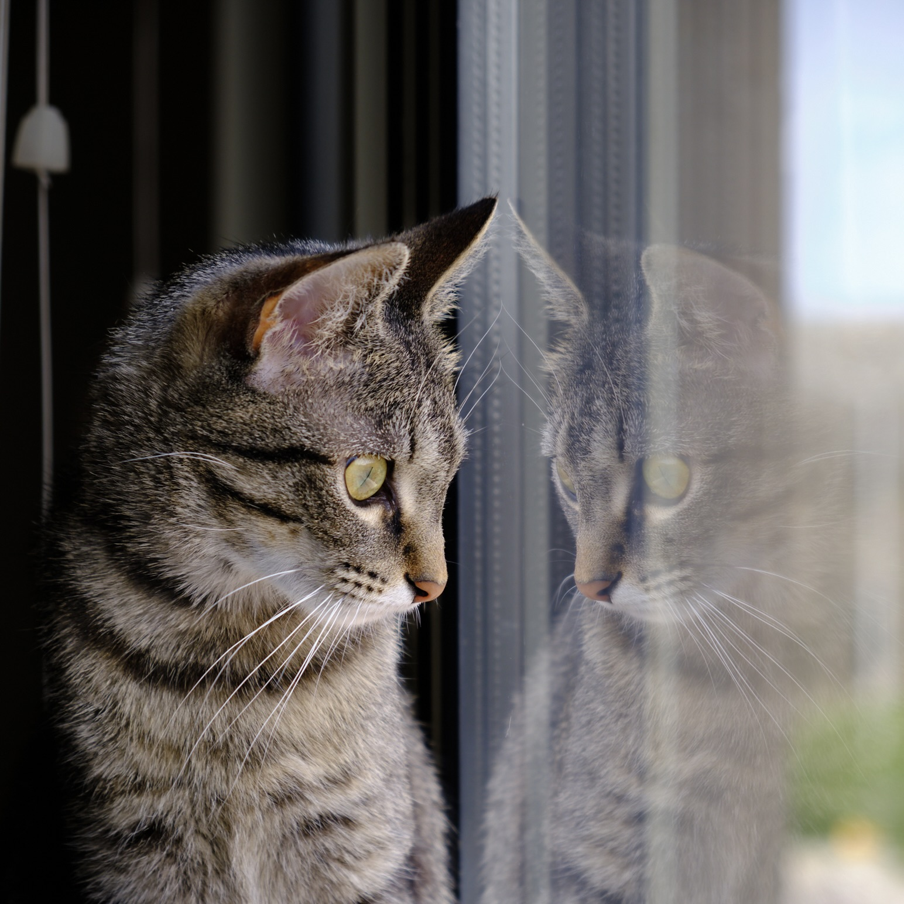
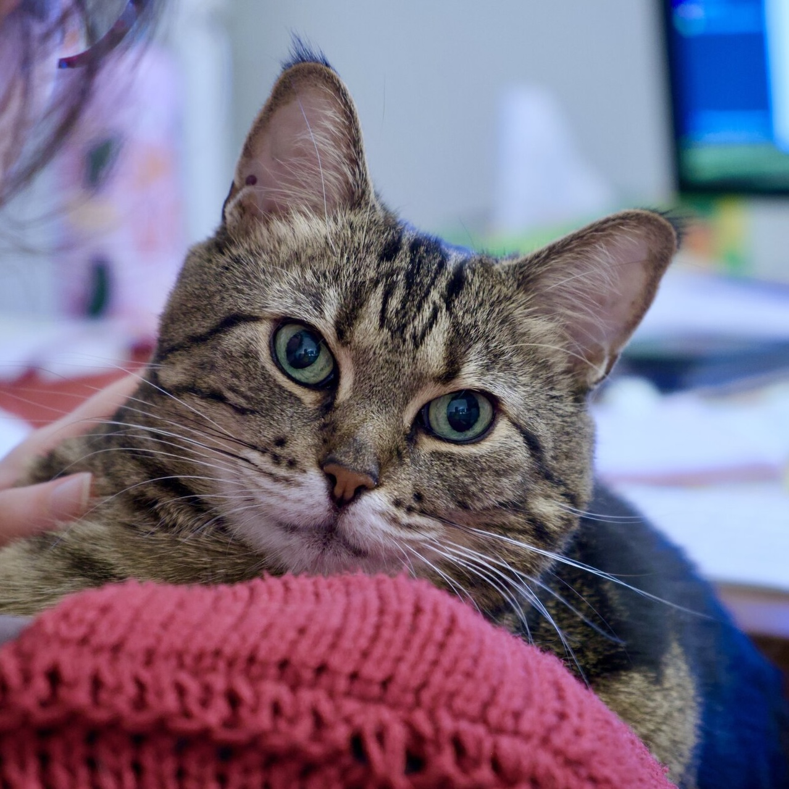

Research
Ongoing and past projects
1. Phonological representations
Most of my research focuses on how speakers build phonological representations, based on evidence from natural language grammars, experiments, phonetic data and corpus data. For example, in both collaborative and sole-authored work, I have investigated the effect of prosodic factors on the manifestation of rhotics in Brazilian Veneto, the patters of metaphony in Brazilian Veneto, the relationship between vowel reduction and phonological structure in Brazilian Portuguese, and the structural conditioning of high vowel deletion in Québec French.
Output:
Guzzo, Natália Brambatti. submitted. Plural alternations and consonant syllabification in Brazilian Veneto.
Guzzo, Natália Brambatti. accepted. Prosodically-conditioned variation: Rhotics in Brazilian Veneto. In Rajiv Rao (Ed.). The phonetics and phonology of heritage languages. Cambridge: CUP.
Garcia, Guilherme D. and Natália Brambatti Guzzo. 2023. A corpus-based approach to map target vowel asymmetry in Brazilian Veneto metaphony. Italian Journal of Linguistics 35(1): 115–138.
Garcia, Guilherme D. and Natália Brambatti Guzzo. 2022. Lexical access in Portuguese stress. Journal of Portuguese Linguistics 21(7): 1–24. [paper]
Goad, Heather and Natália Brambatti Guzzo. 2022. Regularly inflected forms can be prosodically ambiguous in English. Proceedings of the 2021 Annual Conference of the Canadian Linguistic Association.
Guzzo, Natália Brambatti and Guilherme D. Garcia. 2021 Gradience in prosodic representation: vowel reduction and neoclassical elements in Brazilian Portuguese. Glossa: a journal of general linguistics 6(1): 74. 1–26. [paper]
Guzzo, Natália Brambatti, Heather Goad and Guilherme D. Garcia. 2018. What motivates high vowel deletion in Québec French: Foot structure or tonal profile? Proceedings of the 92nd Annual Meeting of the Linguistic Society of America. [paper]
Garcia, Guilherme D., Heather Goad and Natália Brambatti Guzzo. 2017. Footing is not always about stress: Formalizing variable high vowel deletion in Québec French. Proceedings of 2016 Annual Meeting on Phonology (AMP). [paper]
Garcia, Guilherme D., Heather Goad and Natália Brambatti Guzzo. 2017. L2 acquisition of high vowel deletion in Québec French. Proceedings of the 41st Boston University Conference on Language Development (BUCLD). [paper]
2. The acquisition of phonological representations
I have examined the development of phonological representations in monolingual and bilingual acquisition. I have investigated the acquisition of affricates relative to the acquisition of branching onsets in Québec French (where affricates are in complementary distribution with coronal stops). In collaborative work, I have examined whether children acquiring two languages with distinct representations for word-level stress (such as French and English) are able to differentiate between the two systems.
Output:
Guzzo, Natália Brambatti. 2022. Revisiting the acquisition of onset complexity: Affrication in Québec French. Journal of Child Language 49: 774–798. [paper]
Guzzo, Natália Brambatti, Heather Goad and Megan Deegan. 2020. Phonological systems in conflict: The acquisition of stress in bilingual French and English. Proceedings of the 55th Meeting of the Chicago Linguistic Society 2019.
3. Phonological representations in a situation of language contact
I have also investigated how language contact affects speakers’ phonological representations. My focus is on Portuguese-Veneto contact in a region of southern Brazil known as the Italian Immigration Area (IIA). I have also worked on a description of the Brazilian Veneto (Talian) phonological/phonetic system. See more about this project here.
Output:
Guzzo, Natália Brambatti. 2022. Brazilian Veneto (Talian). Journal of the International Phonetic Association – Illustrations of the IPA. [paper]
Guzzo, Natália Brambatti and Guilherme D. Garcia. 2020. Phonological variation and prosodic representation: Clitics in Portuguese-Veneto contact. Journal of Language Contact 13(2): 389-427. [paper]
Guzzo, Natália Brambatti. 2018. Language contact determines prosodic representation and variation. 92nd Annual Meeting of the Linguistic Society of America (LSA), Salt Lake City (UT), USA, Jan 4-8. [poster]
4. Effects of prosody on sentence interpretation
In both joint and single-authored research, I have investigated how prosodic cues (such as pauses, changes in pitch, stress, and constituent size) impact native speakers’ and second language learners’ interpretations of ambiguous sentences. I have so far worked on ambiguous sentences involving depictive predicates in Brazilian Portuguese, relative clauses in English, and anaphoric pronouns in Italian.
Output:
Guzzo, Natália and Chau Tran. in prep. The use of prosodic cues in the interpretation of ambiguous relative clauses in English by Vietnamese speakers.
White, Lydia, Heather Goad, Liz Smeets, Guilherme D. Garcia, Natália Brambatti Guzzo, and Jiajia Su. accepted. Pronoun interpretation in L2 Italian: Exploring the effects of prosody. Linguistic Approaches to Bilingualism.
Goad, Heather, Natália Brambatti Guzzo and Lydia White. 2021. Parsing ambiguous relative clauses in L2 English: Learner sensitivity to prosodic cues. Studies in Second Language Acquisition 43: 83–108. [paper]
Guzzo, Natália Brambatti and Heather Goad. 2017. Overriding default interpretations through prosody: Depictive predicates in Brazilian Portuguese. Proceedings of the 91st Annual Meeting of the Linguistic Society of America. [paper]
White, Lydia, Heather Goad, Jiajia Su, Liz Smeets, Marzieh Mortazavinia, Guilherme D. Garcia and Natália Brambatti Guzzo. 2017. Prosodic effects on pronoun interpretation in Italian. Proceedings of the 41st Boston University Conference on Language Development (BUCLD). [paper]
5. Prosodic organization
In research stemming from my dissertation, I have examined how clitics and compounds in Brazilian Portuguese (BP) are mapped into prosodic domains. The phonological behaviour of certain clitics and compounds in BP supports two assumptions about prosodic structure which had previously been considered as mutually exclusive: (a) the idea that there is a specific prosodic domain for the representation of composite structures (the composite group; Vogel, 2009), and (b) the idea that prosodic domains can be recursive (e.g., Inkelas, 1990; Selkirk, 1996).
Output:
Guzzo, Natália Brambatti. 2018. The prosodic representation of composite structures in Brazilian Portuguese. Journal of Linguistics 54(4): 683–720. [paper]
Guzzo, Natália Brambatti. 2017. Recursion in Brazilian Portuguese complex compounds. In Ruth Lopes, Juanito Ornelas de Avelar and Sonia Cyrino (Eds.) Romance Languages and Linguistic Theory 12. Selected papers from the 45th Linguistic Symposium on Romance Languages (LSRL), pp. 97–110. Amsterdam: John Benjamins. [link]
6. L2/heritage language acquisition of syntax
I have also investigated some topics in L2/heritage language syntax.
Output:
Guzzo, Natália Brambatti and Avery Franken. in prep. Structure preservation and contact effects: Subjects in Brazilian Veneto.
Xia, Vera Yunxiao, Lydia White and Natália Brambatti Guzzo. 2022. Intervention in relative clauses: Effects of relativized minimality on L2 representation and processing. Second Language Research 38(2): 347–372. [paper]
Slabakova, Roumyana, Lydia White and Natália Brambatti Guzzo. 2017. Pronoun interpretation in the second language: Effects of computational complexity. Frontiers in Psychology 8: 1–12. [paper]
See my CV for a list of all my publications.
Copyright © 2024 Natália Brambatti Guzzo